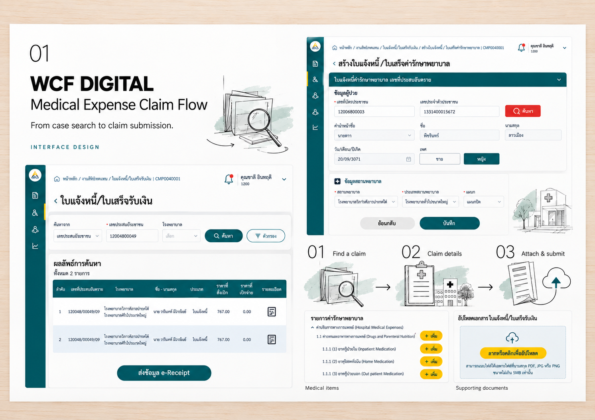

01 — INTERACTION
พางานค่ารักษาพยาบาลกลับเข้ามาในระบบ
ออกแบบ UX/UI · วาง workflow · สนับสนุน UAT
อ่านเรื่องนี้เก็บข้อกำหนด → วาง workflow → ออกแบบหน้าจอ → สนับสนุน UAT
ภาพประกอบขั้นตอนเบิกค่ารักษาพยาบาล
มีหน้าจอใบแจ้งหนี้แล้ว แต่เจ้าหน้าที่ยังต้องออกไปทำงานให้จบข้างนอกระบบ
อ่านเรื่องนี้ฉันศึกษางานจริงที่อยู่หลังคำขอ วางกติกาและจุดส่งต่อ แล้วออกแบบหน้าจอที่ทำงานร่วมกับนักพัฒนาได้ พร้อมนำสิ่งที่พบจากการทดสอบมาปรับต่อ
ออกแบบ UX/UI · วาง workflow · สนับสนุน UAT
อ่านเรื่องนี้วิเคราะห์ข้อมูล · วาง flow · นำเสนอแนวทาง
อ่านเรื่องนี้
UX × SA Intern · สเปกเบื้องต้นและ UX/UI
อ่านเรื่องนี้ก่อนจบ / คุยเรื่องการทำงาน
5 คำถาม ว่าฉันคิดอย่างไร รับฟังอย่างไร และทำงานร่วมกับคนอื่นอย่างไร
ฉันจะกลับมาดูจุดหมายร่วมกัน แล้วระดมความคิดว่ามีทางไหนยังเป็นไปได้ วิธีแก้แต่ละครั้งมักไม่เหมือนกัน
อย่าง Smart Asset ผู้ใช้คุ้นกับระบบเดิม จึงสร้าง SKU เสมือนเป็น Asset แต่ละชิ้น ทำให้เกิด SKU ซ้ำ เมื่อปรับ SKU โดยตรงไม่ได้ ทางออกคือทำเครื่องมือช่วยย้ายข้อมูลจาก SKU ไปเป็น Asset ด้วยการ mapping
“อย่ายึดติดกับเทคนิค หรือเชื่อผลสรุปมากกว่าความจริง”
เป็นคำแนะนำที่ฉันจำได้ และใช้เตือนตัวเองให้กลับมาดูสิ่งที่เกิดขึ้นจริง พร้อมรับคำแนะนำและทบทวนสิ่งที่คิดไว้
ส่วนใหญ่ฉันดูแลดีไซเนอร์ครั้งละสองคน ฉันอยากให้น้องเติบโตตามแนวทางของตัวเอง และระวังที่จะไม่ให้น้องโตมาเป็นฉัน เพราะประสบการณ์ของฉันผสมหลายด้าน
มีน้องที่เปลี่ยนเส้นทางจากการอยากเป็น Team Lead มาทำงานด้าน Design Operations ฉันก็แนะนำตามทางนั้น และเห็นว่าเขาทำได้ดีในแบบของเขา ส่วนคนที่ยังไม่ถนัดด้านธุรกิจ ฉันจะย่อยโจทย์และแบ่งส่วนให้เข้ามาช่วยทำงานร่วมกัน
ในงาน G11 งานส่งเสริม เรามีเวลาจำกัดในการเก็บความต้องการผู้ใช้ และเป็นส่วนขยายที่บริษัทเพิ่มกำลังคนให้ไม่ได้
ฉันจึงออกแบบภายใต้ข้อจำกัดที่มี ตรวจทานความเข้าใจ และคุยกับทีมหลังบ้านถึงข้อจำกัดต่าง ๆ เพื่อให้อีกทีมพัฒนาต่อได้
ฉันจะปรึกษา PO และทีมบริหาร เพื่อดูว่าทางไหนพอเป็นไปได้ภายใต้ทรัพยากรที่มี
อีกคำถามที่ใช้พิจารณาคือ งานไหนเมื่อทำเสร็จแล้วจะนำไปต่อยอดได้ เพื่อช่วยกันจัดลำดับงานที่ต้องทำ
I find inspiration in fun, challenges, and problems to solve.
ฉันพบแรงบันดาลใจในความสนุก ความท้าทาย และปัญหาที่รอให้แก้
Dhittawat Thongkhum